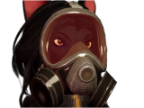
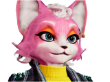
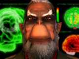
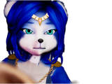
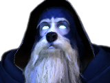
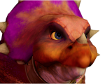
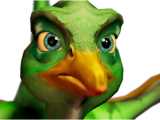
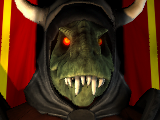
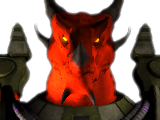

Meet the Characters
Campaign Roster Overview
Second Lylat War

Fox McCloud
LeaderThe leader of the Star Fox team, and the son of James McCloud. Fox led his team after the death of his father, maintaining his posture and his act of responsibility.

Falco Lombardi
Ace PilotThe ace pilot of the team. He can be a bit short-tempered, but he always helps out his friends.

Peppy Hare
Veteran PilotThe original member of the Star Fox team with James and Pigma. After finding out Andross is back, he joined the team with James's son, Fox.

Slippy Toad
EngineerThe engineer of the team. Specializing in weapon upgrades and analyzing weakpoints, but can be a bit too scientific with his words.

Fara Phoenix
Stunt PilotShe met Fox a while back. She's known as a test pilot for the Cornerian army, until she got fired and worked for the Cornerian Police. She joined the StarFox team to take down Andross.

ROBNUS 64
Intelligent SystemAn Artificial System for the StarFox team. Helpful for piloting the Great Fox.

Wolf O'Donnell
LeaderLeader of the Star Wolf team. A well-known rival of Fox and a mercenary. Recently hired to take them out. He was a former pilot in the Cornerian Army, but was dishonorably discharged from service after the Banimus Incident for desertion.

Leon Powalski
AssassinA cold, meticulous assassin with a taste for the hunt. Now a key member of Star Wolf, he relishes outmaneuvering his targets — especially Falco Lombardi..

Pigma Dengar
TraitorOnce a founding member of the original Star Fox team, Pigma betrayed his comrades for profit. Greedy, cunning, and self‑serving, he eventually aligned himself with Star Wolf — though even his teammates know better than to fully trust him..

Andrew Oikinny
Andross' NephewNephew of Andross, Andrew seeks to prove himself worthy of his family legacy. Though inexperienced and often underestimated, he is fiercely loyal to Star Wolf and determined to rise above the shadow of his uncle.

Oda Fang
FighterLittle is known of Oda Fang other than her origins on Titania. She has occasionally worked with Star Wolf over the last decade, and many rumors surround her connection to Wolf O'Donnell.

General Pepper
GeneralThe long‑standing commander of the Cornerian Army, General Pepper, is a respected tactician and one of the Lylat System’s most trusted leaders. He personally recruited James McCloud and later entrusted Fox with the defense of Corneria. Pepper serves as the strategic backbone of the war effort against Andross.

Colonel Shears
ColonelThe second in command of the Cornerian fleet. He's known for his disciplined leadership, sharp tactical instincts, and unwavering loyalty to Corneria. He often oversees large‑scale operations and coordinates frontline units during high‑risk engagements across the Lylat System.
Allies of the Second Lylat War

Bill Grey
CaptainLong-time friend of Fox McCloud during the academy days. Whether commanding ground forces or providing air support, he brings discipline and heart to every mission — always ready to back up Star Fox when the Lylat System needs him most.

Katt Monroe
Rouge PilotKnown for her sharp instincts, quick reflexes, and a playful attitude that hides a fiercely independent spirit. Though she claims to work alone, she frequently appears to assist Star Fox — especially Falco — whenever danger rises in the Lylat System.
Villain of the Second Lylat War

Andross
Scientific TyrantOnce a brilliant Cornerian scientist, his ambition and dangerous experiments led to his exile on the planet Venom. Manipulative, calculating, and endlessly resourceful, Andross commands the Venomian forces with absolute authority — and remains the greatest threat the Lylat System has ever faced.
Sauria Crisis

Krystal
TelepathicRaised in Sauria, Krystal is one of the last Cerinians, and she serves as the spiritual protector of Sauria. She now stands as the world’s first line of defense against the forces threatening its balance.

Randorn
WizardThe last Cerinian Sorcerer alive, and the father of Krystal. Randorn serves as both mentor and guardian, guiding the tribes through prophecy, ritual, and spiritual insight. His mastery of elemental forces and deep connection to Sauria’s lifeforce make him one of the planet’s most powerful protectors during the crisis.
Allies of the Sauria Crisis

Price Tricky
Prince of the Earthwalker TribePrince Tricky is the son of the Earthwalker royal couple and next in line to lead the tribe. He sure can act a bit bratty in terms of behavior, but he's still there to help out.

Princess Kyte
Princess of the Cloudrunner TribePrincess Kyte is the daughter of the Cloudrunner queen and next in line to lead her tribe. She can be a bit... royal, but also a bit of a bratty attitude, however, deep down, she also wants peace for the planet.
Villains of Sauria Crisis

General Scales
Warlord of the SharpClawThe ruthless and power‑hungry leader of the SharpClaw tribe. Driven by ambition and emboldened by dark forces, he seeks to seize control of Sauria’s ancient power and reshape the planet under his rule.

Drakor
Herald of the KrazoaFinal species of the Kamerian species. After the great war between the Krazoa and the Kamerians, his end goal is the destruction of Sauria as part of some "prophecy" by awakening the Great Dragon. His arrival marks the true turning point of the crisis.